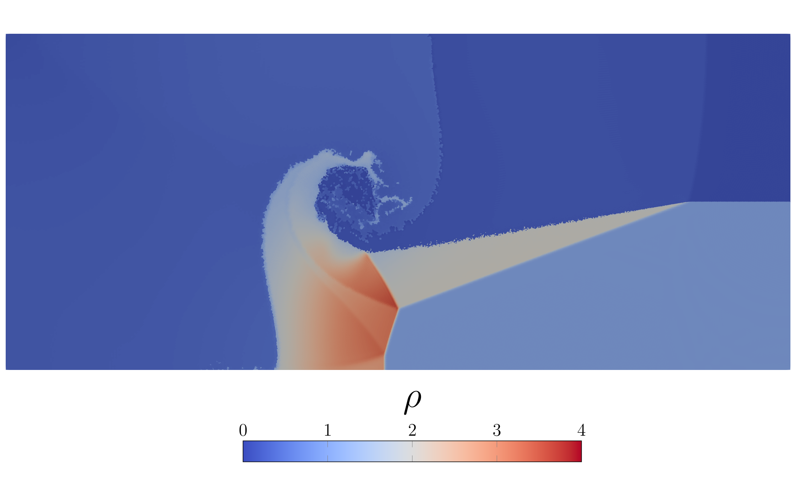

Example 6: Triple-point problem
Triple point is a fancy benchmark which contains three separate gases with different properties. It is described in detail in this paper and is essentially a two-dimensional version of a Riemann Problem. Scientists like it just because it creates a very cool spiral.
module triplepoint
include("../src/LagrangianVoronoi.jl")
using .LagrangianVoronoi, Polyester
const rho0 = 1.0
const xlims = (0.0, 7.0)
const ylims = (0.0, 3.0)
const dr = 1e-2
const nframes = 200
const CFL = 0.1
const v_char = 1.5
const dt = CFL*dr/v_char
const t_end = 3.0
const export_path = "results/triplepoint"This struct helps to reduce the number of constant variables. Numbers xmin, xmax, ymin, ymax specify the rectangle where the phase is located at t = 0.
struct FluidPhase
label::Int # phase label
rho::Float64 # initial density
P::Float64 # initial density
gamma::Float64 # adiabatic index
xmin::Float64
xmax::Float64
ymin::Float64
ymax::Float64
end
const phase1 = FluidPhase(1, 1, 1, 1.5, 0, 1, 0, 3)
const phase2 = FluidPhase(2, 1, 0.1, 1.4, 1, 7, 0, 1.5)
const phase3 = FluidPhase(3, 0.125, 0.1, 1.5, 1, 7, 1.5, 3)
const fluidphases = [phase1, phase2, phase3]
function ic!(p::VoronoiPolygon)
for fp in fluidphases
if (fp.xmin <= p.x[1] <= fp.xmax) && (fp.ymin <= p.x[2] <= fp.ymax)
p.phase = fp.label
p.rho = fp.rho
p.P = fp.P
p.e = p.P/(p.rho*(fp.gamma - 1.0))
p.mass = p.rho*area(p)
end
end
endLet us define our custom equation of state, which is different for every fluid phase. The @batch macro from the Polyester package makes it run in parallel. It is approximately godzillion times faster than @threads.
function multi_eos!(grid::VoronoiGrid)
@batch for p in grid.polygons
fp = fluidphases[p.phase]
p.rho = p.mass/area(p)
eps = p.e - 0.5*norm_squared(p.v)
p.P = (fp.gamma - 1.0)*p.rho*eps
p.c2 = fp.gamma*p.P/p.rho
if p.P <= 0.0
throw("there was a negative pressure")
end
end
endThe rest of the script is just the standard procedure.
mutable struct Simulation <: SimulationWorkspace
grid::GridNS
psolver::PressureSolver
msolver::MultiphaseSolver
E::Float64
S::Float64
E0::Float64
S0::Float64
quality::Float64
first_step::Bool
Simulation() = begin
domain = Rectangle(xlims = xlims, ylims = ylims)
grid = GridNS(domain, dr)
populate_hex!(grid, ic! = ic!)
psolver = PressureSolver(grid)
msolver = MultiphaseSolver(grid)
return new(grid, psolver, msolver, 0.0, 0.0, 0.0, 0.0, 0.0, true)
end
end
function step!(sim::Simulation, t::Float64)
move!(sim.grid, dt)
multi_eos!(sim.grid)
find_pressure!(sim.psolver, dt)
pressure_step!(sim.grid, dt)
find_D!(sim.grid)
viscous_step!(sim.grid, dt)
find_dv!(sim.grid, dt)
multiphase_projection!(sim.msolver)
relaxation_step!(sim.grid, dt)
return
end
function postproc!(sim::Simulation, t::Float64)
@show t
grid = sim.grid
sim.E = 0.0
sim.S = 0.0
sim.quality = Inf
for p in grid.polygons
fp = fluidphases[p.phase]
sim.E += p.mass*p.e
sim.S += p.mass*(log(abs(p.P)) - fp.gamma*log(abs(p.rho)))
sim.quality = min(sim.quality, p.quality)
end
if sim.first_step
sim.E0 = sim.E
sim.S0 = sim.S
sim.first_step = false
end
sim.E -= sim.E0
sim.S -= sim.S0
@show sim.E
@show sim.S
@show sim.quality
println()
return
end
function main()
sim = Simulation()
run!(sim, dt, t_end, step!;
postproc! = postproc!,
nframes = nframes,
path = export_path,
save_csv = false,
save_points = true,
save_grid = true,
vtp_vars = (:P, :v, :rho, :phase, :quality)
)
end
if abspath(PROGRAM_FILE) == @__FILE__
main()
end
endThis page was generated using Literate.jl.